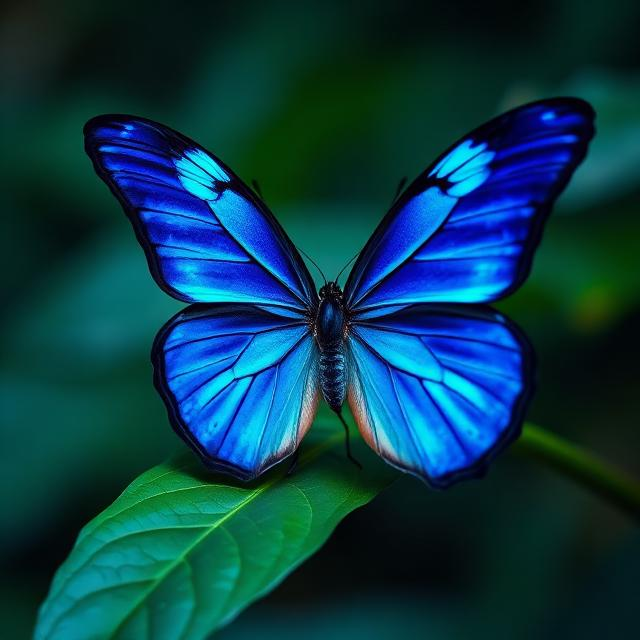
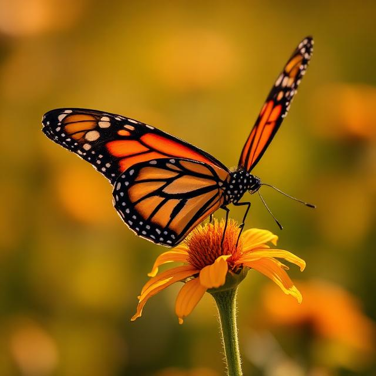
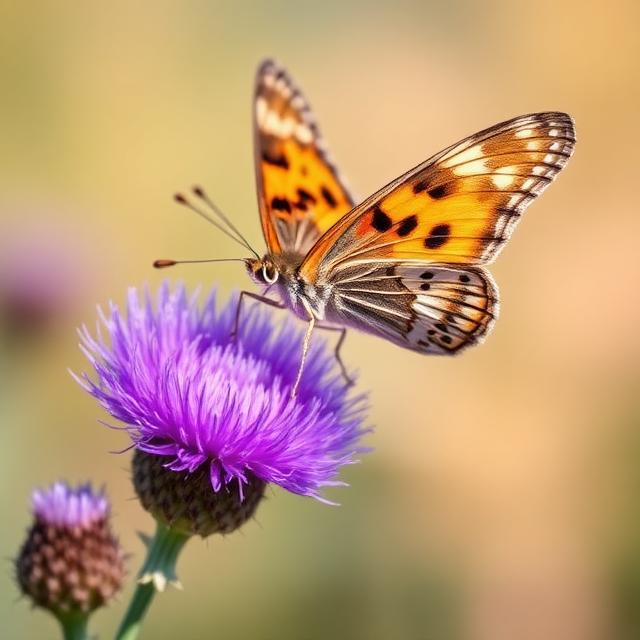
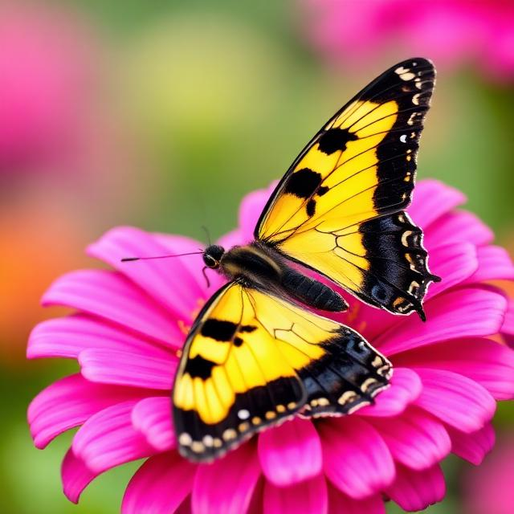
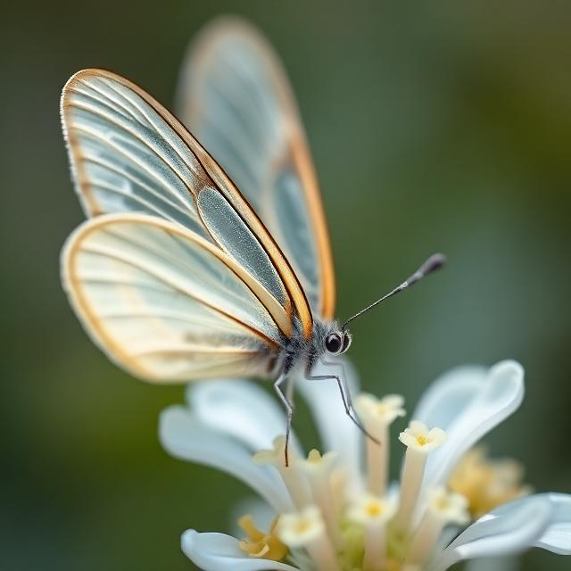

Discover the wonder
Delicate wings, vibrant colors, and ancient migrations — explore nature's most enchanting creatures.
About this site
Welcome to a sanctuary for butterfly enthusiasts and nature lovers alike. This website is dedicated to celebrating the beauty, diversity, and ecological importance of butterflies around the world. Whether you're a seasoned lepidopterist or simply captivated by their grace, you'll find curated species profiles, fascinating facts, and breathtaking imagery to inspire your appreciation for these remarkable insects.
Learn where butterflies thrive — from tropical rainforests to alpine meadows — and why their ecosystems matter.
Browse our curated gallery of remarkable species, complete with scientific names, habitats, and stunning photography.
Discover the incredible journeys butterflies undertake, spanning thousands of miles across continents.
Gallery

Morpho menelaus
Known for brilliant iridescent blue wings that shimmer in the light of tropical rainforests.

Danaus plexippus
Famous for epic 3,000-mile migrations from Canada to Mexico every autumn.

Vanessa cardui
The most widespread butterfly on Earth, found on every continent except Antarctica.

Papilio machaon
Recognizable by elegant tail-like extensions on their hindwings, resembling a swallow's tail.

Greta oto
Their transparent wings make them nearly invisible in flight — nature's stealth masters.
Did you know?
Butterflies are found on every continent except Antarctica, with incredible diversity.
Butterflies have taste receptors on their feet to identify host plants for laying eggs.
Fossils show butterflies have existed for at least 56 million years.
Their wings are covered in thousands of tiny scales that create their vivid colors.